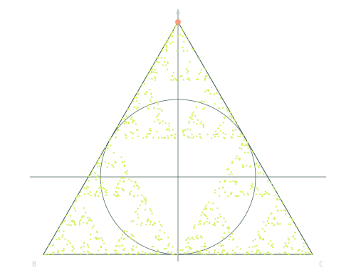

A PLAYABLE CURIOSITY MUSEUM
小小规则，
亲手试出大不同。
一颗行星，几格生命，一次随机。
五个可以亲手拨动的科学小世界，从一句“会怎样”开始。
01 猜一猜02 动手改03 留个发现

每一步随意，
轮廓却有迹可循。1,000 POINTS
50% EACH STEP
轮廓却有迹可循。1,000 POINTS
50% EACH STEP
FIVE WORLDS / YOUR OWN WAY
从哪一个世界开始？
带着问题动手
TRY / NOTICE / DISCOVER
查看与保存本次发现 ↓发现仅保留在本页；刷新前，可保存 TXT 或复制文字。
01 — 引力游乐场运行中
蓝绿 · 负位移深绿 · 零位移黄绿 · 正位移
颜色与亮暗表示此刻的位移，不是整周期幅度；暗处也可能只是经过零。● 漫步者＋ 点云中心◌ 理论散开尺度白实线：一位的路径 · 蓝虚线：直线距离
模拟准备中点击画布，放入一颗行星
同种子，比较两个时刻比较按钮会重建当前参数下的点云并暂停散开程度以点云中心为基准；256 个样本会有波动。逐步操作后暂停，最少保留起点的 16 步；退回再前进会重现相同位置。只走一步让全体各走 1 步；读数跟着白色漫步者，比较路程与离起点的距离。
聚焦画布时，Esc 暂停；不推进或重置。继续请用“继续”按钮。
正值为远离，负值为靠近；这里只看朝向或背离中心的运动。显示为 0.0 不代表停住，瞬时趋势也不判断是否逃逸。
仅撤回最近一次成功发射并暂停；其他行星保持当前轨迹，时间不回退。只能撤回一次；重置或载入新起点后失效。方向按钮每次移动 5 模型单位并暂停，不添加行星。归位到 (140, 0)；准备好后再发射，继续可看运动。轻点画布仍会直接发射。
橙框选格 · 精细绘制
画布 Home 选中第 25 列、第 17 行并暂停；不改动图案。
当前拖动：点亮
开关只改变拖动：关闭时点亮，开启时擦除。轻点、Enter 与逐格按钮仍切换生灭。暂无可撤销的绘制。
聚焦画布时，Ctrl + Z（Mac：⌘ + Z）撤销上一笔，焦点留在画布。只保留最后一次绘制；继续、推进、对比、清空或载入图案后失效。仅留在本页。每次移动 2 模型单位并暂停；向右、向下为正。幅度看完整周期，不是此刻亮度。暂停时，A 实线、B 虚线标出到探针的两条路。相差整数个波长时加强，半整数时抵消；“接近”指距对应值不到 0.1 个波长。上方单步每次推进 ¼ 周期并暂停。保持参数与探针不变：2 次后正负位移反转，4 次后回到相同波形；抵消处始终接近零。
聚焦画布时，← 退一点、→ 添一点；每次按键只走一次。操作后暂停，最少保留起点的 300 点。退回后再前进，会重现相同落点；空心圈为出发点，橙点为新落点。
看近一点 · 观测仪器
跟着白点 · 走过的路，离起点的距离
累计走过
离起点的直线距离
每一步怎样选方向？
每条满宽代表 100%；选择水平、竖直的概率各为 50%。这是所有漫步者共用的选择规则，不是上方这条路径或当前点云的实测比例；有限次选择不必刚好凑齐这些比例。拆开最后一步 · 看随机怎样落笔
从规则看空隙 · 三个下一步范围
A · 上方实线 B · 左下长虚线 C · 右下点线
把外框内所有起点分别向 A、B、C 移动同样比例，就得到对应的三块范围。当前点的下一步只有三个候选位置；色块是所有起点的一步范围，不是已落下的点、概率或完整分形。连续迭代还会形成更细的结构。下一颗行星 · 先选位置，再发射
引力保持不变、无阻力的理想参考：逃逸速率为同半径圆轨道速率 × √2，对应速度滑块约 141.4%。只针对橙色标记的新发射，不判断已有行星；数值模拟存在近似。聚焦画布后，方向键每次移动 5，Home 回到 (140, 0)，Enter 或空格发射；键盘操作会暂停。也可轻点画布直接发射。空心标记是发射点，箭头只表示方向；预演不添加行星。坐标向右、向下为正，距离与速率均用模型单位。动手挑战 · 4 格，能一直不变吗？
点亮 4 个格子，让下一代的位置完全不变。可以用当前图案，也可以从空白开始。
检验后画布：橙 × 消失 · 蓝框新生 · 黄绿为当前活格
查看画布中的这一代 ↑只移动阅读位置，保留本次对比；“返回修改”才会恢复原图。
对比会暂停并前进一代，可返回原图修改；继续、单步或编辑会结束这次对比。这项对比不写入本次发现。返回会恢复这次对比前的图案与代数，并保持暂停；不会写入本次发现。“清空并开始”会替换画布。需要一点提示？
不只检查活格能否存活，也要看周围空格会不会诞生。下方框选读数可以帮忙；正方形不是唯一的答案。
框选一格 · 先预测，再前进
探针处 · 拆开看，再相加
← 负 0 正 →A · 左波源
B · 右波源
画面 (A+B)/2
单源振幅各为 1；画面将位移之和除以 2。瞬时值会变，完整周期的最大幅度由波程差决定。A · 左源
B · 右源
(A+B)/2
三行时间与位移刻度相同。这是当前探针与参数在 t = 0 到 T 的模型曲线，不是运行记录。白色竖线与亮点标出当前周期内的时刻与位移；上方单步推进 ¼ 周期。画布移出屏幕时，模拟与游标都停止推进。A、B 各自仍在振动；合成曲线接近水平，才表示整周期接近抵消。LOOK A LITTLE CLOSER
观察，而不只是观看
背后的小道理
NASA · 轨道与开普勒定律 ↗
英文网页 · 新标签页打开
YOUR FIELD NOTES
把“看到了”，变成“发现了”。
完成上方任意一项探索，这里就会留下你亲手得到的读数。随意逛也很好，没有必须完成的任务。
下载 TXT，保留已完成探索的发现与读数
查看与复制文字
内容与 TXT 相同。点击“全选文字”后，用复制快捷键，或长按文字选择复制。
A SMALL MANIFESTO
不必成为科学家，
也能拥有发现的快乐。
这里不是一个标准答案的陈列室。它是一张随时可以坐下来的实验桌：拨动参数，观察变化，问一句“为什么”。
从随机的落点，到确定的格子；从轨道的弯曲，到波的相遇，再到漫步的扩散。五个小世界，可以随意逛，也可以顺着一个问题继续走。没有账户，没有排行榜，也没有必须完成的任务。只留一点空间，给没有目的的好奇。
独立实验站本地运行开放探索